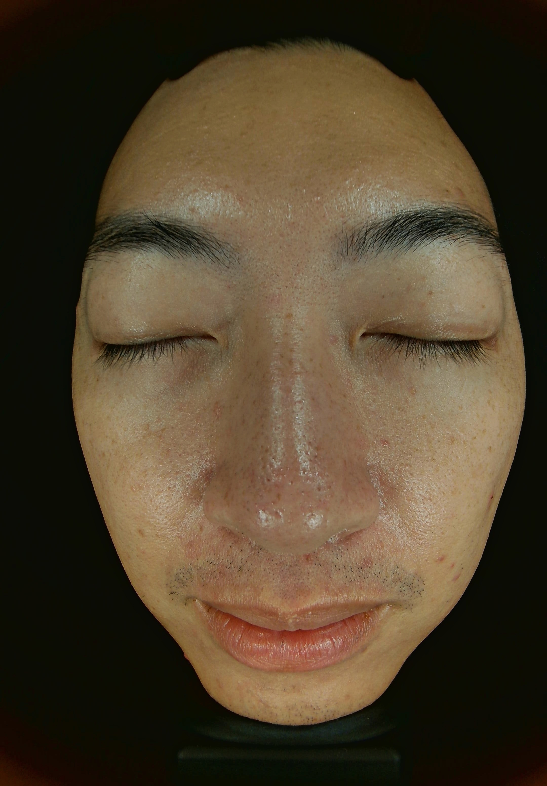

Skin Architecture Assessment

Reactive-Sebaceous Architecture
"Alvin, your latest scan confirms that Phase 1 and 2 have done their foundational work — your matrix density is strong. However, the biological map now reveals two dominant signals that require precise correction. First, your vascular network remains reactive: diffuse redness and post-inflammatory erythema are actively depositing across the mid-face. Second, your sebaceous architecture is in overdrive: the Wood's Lamp scan shows dense sebum fluorescence across the entire T-zone, driving follicular congestion, enlarged pores, and the early formation of post-inflammatory hyperpigmentation.
These two systems — vascular reactivity and sebaceous overactivity — are feeding each other in a loop. We are now engineering a protocol that interrupts that loop: calming the vascular noise with sequential Gradual Rebirth resets, resurfacing the congested follicular openings with Sellas, and using Scarlet RF's perifollicular thermal energy to physically contract the pore architecture and suppress sebaceous output at the gland level. Your Sleep Score (4/5), managed stress, and low alcohol ensure your biological environment is primed for this correction."
Baseline vs. Target Metrics
Strategic Roadmap
| Phase | Status | Objective | Primary Action |
|---|---|---|---|
| Phase 1: Clear | ACHIEVED | Biological Clearance | Stabilization of inflammatory markers and initial debris clearance. |
| Phase 2: Load | ACHIEVED | Exosome Saturation | Collagen induction via Sellas and Exosome loading to 9/10 density. |
| Phase 3 Cycle 1 | Days 1–41 | Calm, Reset & Prime | A Gradual Rebirth ➔ Youthful Renewal ➔ Sellas |
| Phase 3 Cycle 2 | Days 51–101 | Resurface & Regulate | Sequential Resets building to Scarlet RF sebaceous correction and Pico laser pigment shattering. |
| Phase 3 Cycle 3 | Days 111–120 | Pigment Correction & Seal | Post-laser recovery + final Exosome seal to lock resurfacing gains. |
| Phase 4: Bio-Maintenance | 120 Days+ | 120-Day Architectural Review | Full 3D Analysis to determine if additional Lifting Cycles are required before Maintenance. |
| Phase 5: Longevity Loop | 2027+ | Long-Term Preservation | Annual Architectural Planning & Exosome Top-up. |
The Variable Signal Pulse
A Gradual Rebirth
Baseline CalibrationBiological Outcome: Priority reset. Deep cleanse and LED infusion reduce mid-face inflammatory load. We calm the reactive canvas before initiating active signal work.
A Youthful Renewal
Exosome Load #1Biological Outcome: First 40B Exosome saturation into a calmed baseline. Thickens capillary walls to seal vascular reactivity, while growth factors initiate perifollicular collagen remodelling.
A Gradual Rebirth
Cellular Reset #1Biological Outcome: Post-exosome barrier maintenance. Enzymatic clearance and LED soothing consolidate exosome signals, keeping the canvas clean for upcoming resurfacing.
A Gradual Rebirth
Cellular Reset #2Biological Outcome: Sebum clearance pass. Deep cleanse targets T-zone follicular congestion, priming architecture for Sellas resurfacing to maximize laser penetration and reduce purging.
Sellas Laser
Resurfacing Pass #1Biological Outcome: First Sellas pass targets follicular roughness and PIE. The regenerative stack (Exosomes, PDRN, Senolytics, NAD+) accelerates epidermal recovery and suppresses post-laser inflammatory rebound.
A Gradual Rebirth
Post-Laser RecoveryBiological Outcome: Post-Sellas thermal release. LED red light accelerates turnover, and calming actives restore the barrier, ensuring zero residual inflammation before the next load.
A Youthful Renewal
Exosome Load #2Biological Outcome: Second 40B Exosome saturation via microneedling directly targets sebaceous architecture and atrophic beds. PDRN, Senolytics, and NAD+ amplify matrix rebuilding.
A Gradual Rebirth
Pre-RF Buffer ResetBiological Outcome: Pre-RF buffer session. Ensures the epidermal barrier is intact, inflammation is at baseline, and perifollicular collagen is primed for maximum thermal contraction.
Scarlet 24k
Sebaceous Contraction #1Biological Outcome: Primary sebaceous correction. Scarlet RF microneedles contract perifollicular dermis and suppress sebum. The infusion stack (Exosomes, PDRN, Senolytics, NAD+) buffers thermal stress.
A Gradual Rebirth
Thermal Release #2Biological Outcome: Post-Scarlet cooling and consolidation. Enzymatic cleanse clears purging debris triggered by sebaceous contraction, followed by LED to maintain vascular calm.
Pico Laser
Pigment ShatteringBiological Outcome: Pico photoacoustically shatters remaining PIH without thermal damage. The full regenerative stack (Exosomes, PDRN, Senolytics, NAD+) suppresses melanocyte rebound and powers DNA-level cellular repair.
A Gradual Rebirth
Post-Laser Recovery #2Biological Outcome: Post-laser barrier restoration. Soothing infusion consolidates resurfacing gains, ensuring the skin is calm, hydrated, and stable ahead of the final seal.
A Youthful Renewal
Exosome Seal — The 2026 CloseBiological Outcome: Final 40B Exosome saturation seals the 120-day gains. Supercharged with PDRN, Senolytics, and NAD+ to lock in contracted follicular architecture and stable pigment.
Home Care Architecture (HK Climate Edition)
Concept: Sebum regulation and vascular calm (AM) + Accelerated resurfacing with barrier protection (PM). Every step earns its place.
AM: Regulate, Calm & Protect
Enzyme Wash
If face feels oily in the morning, use enzyme wash. The amino acid base removes overnight sebum without stripping — critical for preventing compensatory oil production.
The Healer
Applied as a toner across full face. Ceramide NP begins barrier reinforcement while Centella directly addresses the vascular reactivity visible across mid-face. Non-negotiable for Alvin's profile.
A.G.E Eye Essence
Critical: Tap to manually drain puffiness/fluids. Apply before The Concentrate so actives don't migrate into orbital zone.
The Concentrate
Full face and neck. Growth factors and DNA recovery actives work synergistically with the overnight repair cycle. In morning application, this primes receptors for the day.
Hydragel
Lightweight seal for HK humidity. Locks in The Concentrate without adding occlusive weight that would aggravate sebaceous congestion. Do not substitute with a cream.
UV Defence
Mandatory. Post-Sellas and post-Scarlet RF skin is photosensitive. Skipping SPF during this protocol directly undermines Melanin Uniformity targets — UV exposure will redeposit the PIH we are clearing.
PM: Resurface, Target & Repair
Enzyme Wash
Double cleanse mandatory on days with sunscreen. The enzyme action begins pre-exfoliation — do not rush this step.
The Healer
Barrier reset after cleansing. Prepares skin for actives without the sensitisation that would occur on a stripped barrier.
The Concentrate
Full face and neck. Applied before targeted actives so growth factors penetrate the deeper dermis rather than being blocked by the resurfacing layer above.
T-ZONE TARGETING
Night A / C / E (3× per week): The Resurfacer — AHA/BHA application to forehead, nose and chin only. Dissolves the follicular congestion that the Wood's Lamp scan shows is still dense across the T-zone. Do not apply to cheeks or perioral zone where the barrier is more reactive.
Night B / D / F (alternate nights): Youth Booster — Retinol + EGF to forehead, nose, and chin only. Regulates sebaceous output over time and initiates pore tightening at the retinoid level, working in alignment with the in-clinic Scarlet RF.
The Essential
Cheeks, jaw and neck only — never T-zone. Lipid restoration for the zones where the barrier is thin and reactive but sebaceous load is low. Prevents the cheek dehydration that triggers compensatory redness.
Hydragel
Full face sleep mask. On Resurfacer nights, this is the critical occlusive seal that prevents trans-epidermal water loss during acid turnover. On Youth Booster nights, it buffers retinol irritation. Non-negotiable.
Internal Architecture Support
To support the 'Anabolic Window' during this protocol:
Cortisol Management
Status: OPTIMIZED
Your Sleep Score (4/5) is our greatest asset. We are relying on this natural repair cycle to handle the aggressive resurfacing and contracting phases.
Matrix Building
Status: OPTIMIZED
Your protein intake is sufficient. This ensures the Exosomes have the amino acid substrates required to build Type I Collagen.
Signal Clarity
Status: OPTIMIZED
Low alcohol intake means your cellular NAD+ energy is high, ensuring maximum response to the laser/needle signals.
Protocol "Golden Rules"
The Alcohol Restriction
Absolute restriction 48 hours before/after Exosome sessions. Alcohol depletes NAD+, blocking signal reception.
The Heat Spike Rule
Avoid saunas and high-intensity cardio for 48 hours post-procedure to prevent vascular dilation (Redness).
The Variable Pulse
Your sessions range from 10 to 14-day intervals depending on the treatment intensity. The cadence is: Reset → Load → Resurface → Contract → Seal. Missing a session disrupts this biological sequence — particularly critical around the Sellas and Scarlet RF windows.
The SPF Protocol
During active Sellas resurfacing phases (Days 41–60 and Days 101–111), apply UV Defence twice daily — morning and midday. Post-resurfacing epidermis has reduced melanin protection. Sun exposure during this window is the single fastest way to reverse Melanin Uniformity gains.
Projected Architectural Outcome
Correction vs. Maintenance
We are now in the 'Correctional Phase'. The goal is to maximize the density we have built and physically lift the structure.
- Pore Architecture: After two Scarlet RF sessions, one Sellas pass, and one Pico pass, expect a measurable reduction in pore diameter across the T-zone. The sebaceous fluorescence visible on Day 1 Wood's Lamp should be significantly reduced by the 120-day review.
- Vascular Calm: The sequential Gradual Rebirth resets combined with three Exosome loads are designed to progressively thicken the capillary walls, reducing the diffuse redness and PIE macules across the mid-face. This is a gradual correction — expect visible progress by Day 61, meaningful stabilisation by Day 120.
- Pigmentation: The two Sellas passes will address surface-level PIH and texture. Given that the pigment deposits are early-stage (not deeply established), a clinically visible improvement in tone uniformity is a realistic outcome within this timeline.
- Scarring: The two Youthful Renewal sessions and their 40B Exosome loads are the primary drivers here. Atrophic pits will not fully resolve in 120 days — but expect a softening of scar edges and a reduction in shadow depth as the matrix density is maintained.